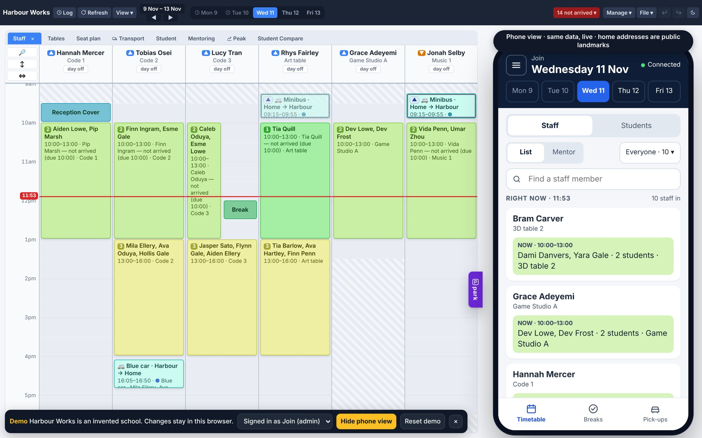
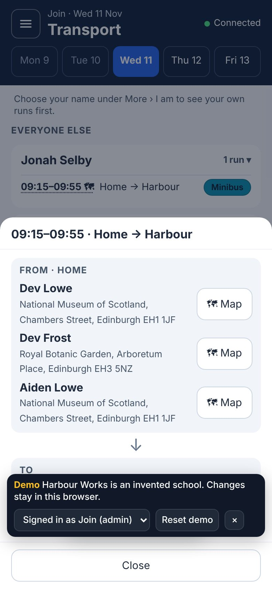
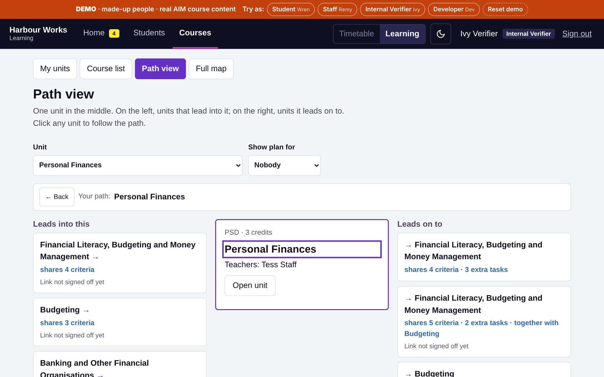
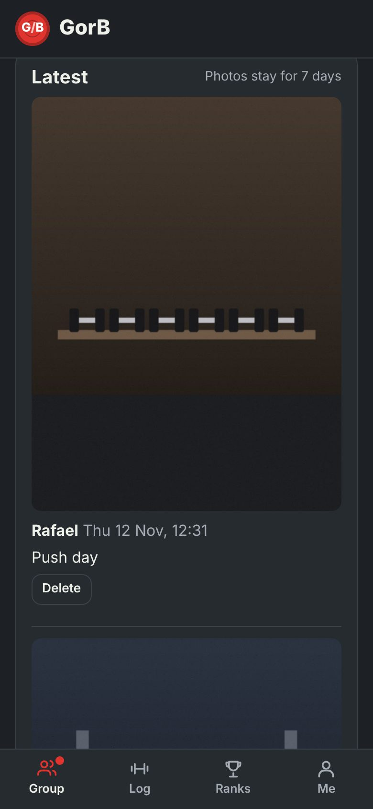
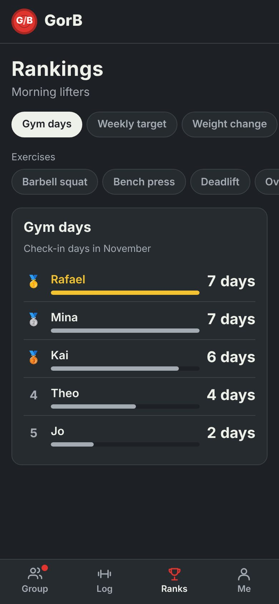
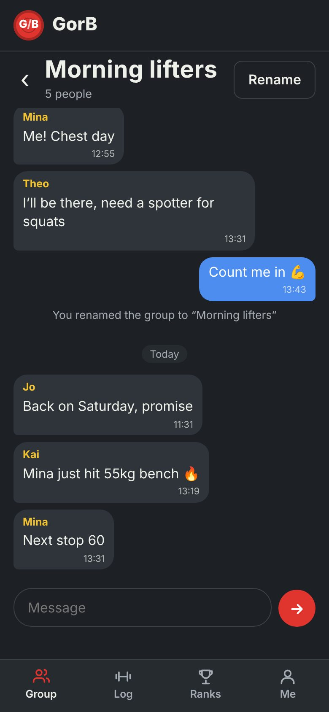
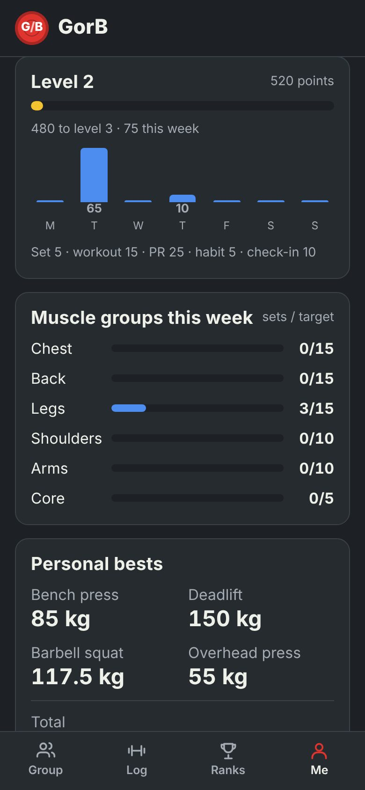

This page is a school day on my timetable. Click a block to go there, or move one to change the page order.
My school day
This page runs on my timetable. Tap a period to go there.
Berkshire, UK
I build the tools that replace the mess.themess.
A timetable trapped in a spreadsheet. Student work scattered across folders. Progress nobody could see. I find what slows people down and build the software that fixes it, with AI writing much of the code and me deciding what it does and testing it before anyone relies on it.
This page runs on a small version of my timetable engine. The red line follows your scroll. Drag a block and the page reorders. Lunch is locked, so try dropping something on it. The last block is when I can start.The timetable at the bottom is the menu: the red line follows your scroll and tapping a block jumps there. Tap My day to rearrange the page. Lunch is locked.
RoleSupport Worker (Game Design), building the school's systems in protected time
ShippedA timetable platform two school sites run their day on, used by about 100 people
BuildingA learning tracker for 718 real course units
Contactrafaelkoo.uk@gmail.com
Live · 2 sites · ~100 people
Timetable platform for a two-site school

The problem
The timetable lived in Excel, and I hated reading it there. Finding who was where meant scrolling a spreadsheet.
What I built
An editor for building the week, a published read-only rota, and a front-desk board for arrivals and pick-ups, with breaks, transport and mentoring slots.
What changed
Two sites now run their day from it, and about 100 people at the school use it. In October alone, 10 staff made over 31,000 changes in it, across about 570 timetabled sessions a week for roughly 170 students and 50 staff.
“Raf’s rota system has saved us twice over. It saved the company a large bill for a ready-made system, in a crowded market where none of them fitted all our needs. And it removed the manual admin: instead of editing spreadsheets and numbers, we now pull reports and use them to improve how staff work.”
“Working alongside Raf while he built the rota system was a joy. He was open to all feedback and requests, and his communication was excellent throughout. He built it with its users in mind, and it has improved my own productivity.”
On the phone, and on the way to every pick-up
Staff on the move see who is where right now and tick breaks. A driver taps a journey and gets each stop with a Google Maps button.
Pupils' home addresses never travel with the timetable data. The server keeps them apart, hands a run's addresses only to accounts allowed to plan that run, and logs every read.

How the address rule works
The server, not the page, decides who gets addresses. A run's addresses go only to the people on that run or an editor allowed to edit it, and the read is logged without the address itself.
// abridged from lib/homeaddr.jsfunction forBlock(me, q, who) {
const s = store.get('sessions', q.wk + '|' + q.sid)?.data?.s;
const onIt = staffIdOf(me) && [s.staffId, ...helpersOf(s)].includes(staffIdOf(me));
const ed = me.role === 'join' || perms.canEditSession(me.role, s);
if (!onIt && !ed) return { status: 403 }; // no address leaves the server
store.audit({ who, op: 'homeaddr-read', n: count }); // who read, never what
...
}
Every record carries an etag, so a save is refused if someone else changed that record first.
New work goes into a prototype copy and is tested by checklist and automated suites before it reaches the live site.
Open the live demo ↗Vanilla JS · Node.js · per-record document store · test suites · audit log
In progress · demo live
Student Tracker
The problem
Evidence of what students had learned was scattered and untidy, and near-identical coursework had to be done twice for overlapping units.
What I'm building
One platform that links 718 real course units (3,068 criteria across 21 qualifications) criterion by criterion. Students hand in work per task, staff mark per criterion, and Internal Verifiers check every passed unit.
What will change
Work done for one unit counts towards another, and a student who misses one criterion resubmits only that one.

Path view: which units share criteria with Personal Finances, and which links have been signed off.
How the rules work
Every change is a named action. Its rule is a pure function that returns the writes it wants, and the store saves all of them or none. The page loads the same rule files only to grey out buttons.
// abridged: every action has the same shape
register({ name: 'markWork', role: 'staff', run(ctx, input) {
if (!teacher && !mentor) return { error: 'Only this unit\'s teachers…' };
return { writes, notes: ['Marks saved.'] };
}});
// lib/store.js: all of it or none of it
writeMany(ops) {
for (const op of ops) if (etagOf(op) !== op.ifMatch) return { conflict: true };
ops.forEach(write);
}
129 automated tests, plain Node, nothing to install.
Each person's browser only receives the records that person may see.
Decisions are written down as numbered decision records before the code.
I trained five days a week and guessed at whether I was improving. Now every set is logged against last session, every lift has a chart, and every exercise has an animated 3D demo.
Under the hood
A Three.js mannequin with two-bone IK and 94 keyframed movements across 93 exercises.
Plain ES modules, no build step; a service worker makes it work offline.
I run several sites on my own, and nobody tells me when one breaks. A broken link or a layout that scrolls sideways on phones could sit there for weeks.
What I built
Every morning it opens each site in a real browser at desktop and phone size, checks speed, errors, links and accessibility, keeps a history, and opens a GitHub issue when something gets worse.
What changed
On its first run it found three real problems: low-contrast labels on this page and the tracker demo, which I fixed, and zoom turned off in my game, which is deliberate.
Latest checkLoading the live results…
How it decides
// abridged from watchdog.mjs: 100 is perfect
s -= Math.min(30, 10 * v.jsErrors.length); // page errors
s -= Math.min(40, axe.reduce((a, x) => a + IMPACT[x.impact], 0)); // critical 8, serious 4
s -= v.overflowPx > 1 ? 10 : 0; // scrolls sideways on a phone
s -= Math.min(20, 5 * brokenLinks.length);
// an alert only for what is new or worse, so it never nags about known issuesif (score <= prev.score - 10) problems.push(`Score dropped from ${prev.score}`);
Runs on GitHub Actions at 06:17 every day, free, with no passwords to manage.
The issue closes itself when the next check is clean.
Accepted exceptions are written down with the reason, not silently ignored.
FitTrack, my earlier gym app, lived on one phone, so only I could see it. My friends and I kept our personal bests in a shared Excel sheet, and nobody could see who had actually been to the gym.
What I built
A group app. You check in with a live camera photo, your group sees it, and a monthly table shows who has been. It has workouts, personal bests, rankings for each exercise, a group chat and push notifications, in English and 繁中.
What changed
FitTrack's features came across in six stages, with an import for my old data, so nothing I had logged was lost. FitTrack itself stays as the one-person version.

Check-ins

Rankings

Group chat

Progress
Screenshots use made-up people and photos. The real app is for my friends, so it needs a sign-in.
The privacy rules live in the database, not the app: groupmates only, on all 17 tables.
Photos lose their GPS data before upload and are deleted after 7 days.
Database changes deploy themselves from GitHub.
Privacy is enforced by the database
-- abridged from supabase/migrations: every table has row-level security oncreate policy"see groupmates checkins"on checkins for selectusing (shares_group(user_id));
-- the server stamps who and when, so a phone can't backdate or post as someone else
new.user_id := auth.uid();
new.created_at := now();
if split_part(new.photo_path, '/', 1) <> auth.uid()::text thenraise exception'photo must be in your own folder';
end if;
Photos are drawn onto a canvas and re-encoded on the phone, which drops all EXIF data (GPS, phone model).
A daily job deletes photos after 7 days but keeps the check-in, so rankings don't change.
Every push that touches the database runs GitHub Actions, which applies new migrations and deploys the notification functions. Migrations are written to be safe to run twice.
Code on GitHub ↗Supabase (Postgres, Auth, Storage, Edge Functions) · Web Push · Three.js · PWA
Protected development time each week, alongside teaching
I design and build the timetable platform both sites run on, used by about 100 people at the school, and the learning tracker now in development.
JavaScriptNode.jsDocument storeAutomated tests
May 2025 – now
Support Worker (Game Design)
A creative-skills school in Berkshire
I teach students Game Design, Coding in Unity, Website Design and Music Theory. I built my own tools for it: a code pipeline that makes my lesson decks, a slide kit other teachers fill in, and a Unity error explainer for students.
UnityC#Web designNode.jsMusic theory
[DATES]
[EARLIER ROLE]
[WHAT YOU DID]
2023
BSc Virtual and Augmented Reality, Merit
[UNIVERSITY]
UnityC#3D
Full CV: [CV LINK]
Booked
Interview booked. Thank you!
You put an interview with me in . Here's a message ready to send to rafaelkoo.uk@gmail.com. Change anything you like.
AI writes code fast. Process makes it trustworthy.
AI writes most of the code. I decide what gets built, how it should look and work, and whether it is right before anyone else sees it.
1 · Plan the whole projectWhat it is for, who will use it and what "done" looks like, before any code.
2 · Write the document firstA written plan, a glossary and numbered decision records. The tracker has 12 of them behind its rules.
3 · Pick the right skillsI set the AI up with the skills the job needs: design rules, accessibility, testing, code review, and my own skills for the school's rules.
4 · Decide how to present itMockups with 2–4 options are agreed before a feature is built.
5 · Build with AI, in a prototypeNew work lands in a prototype copy and only reaches the live system after it passes testing.
6 · Check it, then shipAutomated tests (129 in the tracker) and a "do this, should see that" checklist run before every release. Docs and handover notes are updated in the same session.
Smaller things I built along the way
Unity Error ExplainerPaste a red console error and it explains the cause and the fix in plain words, using an AI model.
Student portfolio engineA script generates each student's portfolio site, with their own palette and opening.
Lesson deck toolsA code pipeline builds my lesson decks, and a sidebar kit lets other teachers fill in boxes instead.
Living BuildingA timetable shown as a 3D building you can scrub through time.
[YOUR PHOTO]
I like dealing with problems.
I'm a Support Worker (Game Design) at a creative-skills school in Berkshire. Alongside supporting students and teaching Game Design, Coding in Unity, Website Design and Music Theory, I design and build the school's systems: the timetable platform both sites run on, and the learning tracker I'm building now. The school gives me protected time each week for that development work. I hold a BSc in Virtual and Augmented Reality (Merit, 2023).
This site is set in Atkinson Hyperlegible, a typeface designed for low-vision readers. I use it in the school's own tools too, so they stay easy to read for every student.